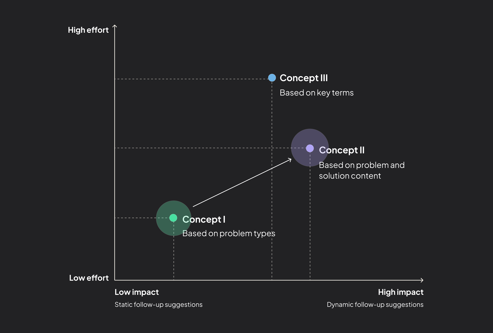
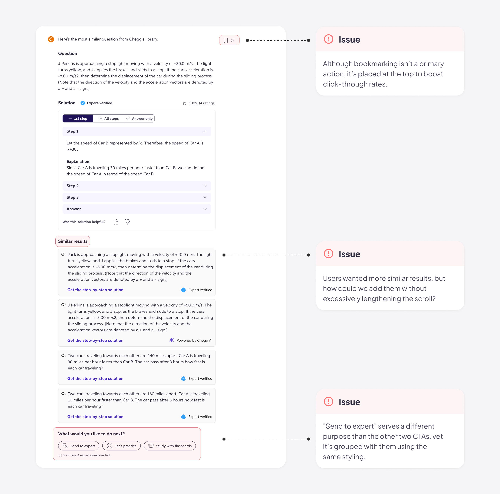

How I increased the user engagement of Chegg's AI chat by 4.67%
2024 · New feature design
Early concepts
Steering my team through unexpected timeline shifts
After getting aligned on the high-level goals and strategies, I dove into brainstorming and sketched out some early design ideas. To help the team prioritize, I grouped the concepts into three buckets:
Concept I: Suggestions based on problem types
Using learning science, problems can be broken into types like Factual, Conceptual, or Procedural. We could suggest follow-up questions tailored to each type to help deepen understanding.
Concept II: Suggestions based on problem and solution content
We could use the LLM to generate suggestions dynamically based on the specific content of each problem and solution. While this approach required more effort to train the LLM, it would produce more personalized and relevant suggestions.

Concept III: Suggestions based on key terms
We could highlight key terms from the solution, chosen by the LLM with some guidance from learning science, and prompt users to learn more.

Mapping out the tradeoffs to help my team prioritize and pivot
To help my team understand the tradeoffs, I created a 2x2 matrix to map the concepts based on effort and potential impact. With a tight timeline, we initially prioritized Concept I - Suggestions based on problem types - as it was the quickest to implement while still providing some context-aware suggestions. Midway, a company strategy shift put the project on hold, and when we picked it back up, we had more time available. The 2x2 matrix I created became a key tool in guiding the team’s pivot to Concept II - Suggestions based on problem and solution content - which required more effort in LLM training but promised greater impact.
Information hierarchy & research
Revisiting the information hierarchy: a step back for better UX
Where should we place the new feature on an already crowded page?
Over the past few months, new features and content had been added to the page without much thought given to the overall information hierarchy. Now, we faced the challenge of introducing yet another feature—one that certainly wouldn’t be the last. Balancing these additions without overwhelming the interface required careful organization to maintain a clear and intuitive user experience.
The page was based on a disorganized information hierarchy, with functions scattered throughout the interface.
Initially, PMs argued that follow-up suggestions should take priority, while actions like reviewing similar solutions or sending questions to experts were considered lower priority. However, user feedback revealed that these so-called “secondary” actions were actually quite important. Realizing we lacked a clear understanding of how users were interacting with the page, I proposed and conducted a user research study to answer critical questions:
- Since Chegg’s solutions aren’t always 100% accurate or perfectly matched to users’ questions, how do users evaluate solutions to find the most relevant ones?
- What would they do if they are still confused after finding the best solutions available? would they consider asking follow-up questions to AI?
Discovering users’ mental modal through UX research
Using UserTesting.com, I presented the current design and observed how students identified the best solutions. Key findings included:
- When dissatisfied with the initial solutions, 75% of students compare similar Q&As, and if that doesn’t work, 42% turn to expert help.
- Students would ask follow-up questions for clarification after identifying solutions, appreciating the immediacy of AI responses.
A/B testing different placements
Based on these insights, I worked with the content designer to revamp the information hierarchy. Our changes can be summarized in two key points:
Helping users find the best solution first
We prioritized features that helped users find the best solution, such as simplifying Q&A comparisons and providing quick access to expert help. Once this primary goal was met, users were more likely to ask follow-up questions.

Surfacing follow-up suggestions at the right moment
We positioned follow-up suggestions after these primary features. While the placement seemed less prominent, it ensured the feature appeared exactly when users needed it most.
To ensure we weren’t missing an opportunity for better discoverability, my PM and I decided to play it safe by testing multiple variants. Ultimately, we included a second variant in the A/B test, placing the follow-up suggestions as a sticky element on the right rail for improved visibility. This approach allowed us to balance user needs with business goals, ensuring the new feature was both intuitive and impactful.
Control
Variant A
Variant B
Visual design
Refining the visual details
Choice of icons
I explored different icon options to find the one most relevant to the follow-up suggestion feature. Since our design system only included a plain chat icon at the time, I designed an illustrative one to enhance the visual appeal.
Spark icon overemphasizes the AI technology.
Arrow icon suggests the action of "send," but doesn't clearly communicate the concept of multi-turn chats.
Chat icon directly communicates the concept of multi-turn chats and can be easily understood.
Final version
Visual treatment for feature grouping
When presenting my design iteration to the UX team, one key suggestion I received was to group the follow-up suggestions with the existing Next Best Actions (e.g., "Let’s practice"), as both represent subsequent actions users can take. I went through multiple rounds of iteration, continuously evaluating the trade-offs of each option.

This option keep all actions visually consistent and unified, but it's not visually appealing, and the copy is less concise.
Although the two sections are less connected visually, this option is more intuitive and distinctive.
Final version
AI design
Prompting AI to generate high-quality, relevant suggestions
Prompt engineering
I worked closely with the learning science team and LLM engineers to refine the prompt. Initially, we experimented with offering a set of predefined options (e.g., help me memorize, create an analogy, give an example) and allowed the LLM to choose the most appropriate one based on the given question. However, after conducting prompt engineering tests, we discovered that the more specific the instructions, the less relevant and lower quality the output became, as the LLM would attempt to follow the instructions too rigidly. As a result, we shifted to providing a more generic prompt, as follows:
Your goal is to provide suggestions of follow-up questions that a student might ask regarding a question and response you are helping them with original question and response context.
Write 3 follow-up questions, no longer than one sentence, tailored and relevant to the original question the student asked and the content of the answer they received. These follow-up questions should be from the perspective of a student, should be engaging and inviting for a student to ask, and span a variety of types of follow-up questions.
I estimated the typical length of follow-up questions generated by the LLM and set a character limit to ensure the output wouldn’t overwhelm the user or constrain the quality of the suggestions. The limit was added to the prompt as follows:
Each follow-up question should be brief and no longer than 120 characters.
Adoption of AI means less control
As we integrated generative AI into the product, we realized that we had less control over the output. I became more aware of potential friction and proactively designed for possible scenarios, such as: What if it takes too long to generate follow-up suggestions? What if an error occurs and the generation fails? I made sure to address these cases within the design to ensure a smooth user experience.

The shimmer acts as a placeholder while the follow-up suggestions are being generated. If an error occurs, the section is hidden to avoid drawing unnecessary attention.